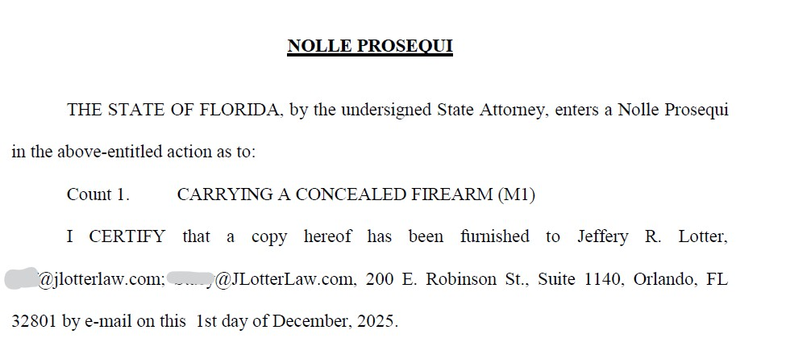

Securely Encased or Concealed Carry? How We Got Firearms Charges Dismissed
The Distinction That Saved a 19-Year-Old From a Felony
Published on by Attorney Jeff Lotter
A cross-body bag with a firearm inside. On the driver's lap during a traffic stop. Is that concealed carry requiring a permit—or securely encased in a vehicle, which anyone can do legally?
The answer to that question was worth a felony charge. The State didn't want to litigate it.
Carrying Concealed Firearm
19-year-old client. Motion to Suppress filed. Motion to Dismiss filed.
Result: CHARGE DISMISSED
State dropped the case the morning of the hearing.
The Legal Question
I recently made a video discussing the different ways you can legally carry a firearm in Florida—and why the distinctions matter. This case is a perfect example.
Under what law is a firearm being carried when it's inside a zippered cross-body bag? Is it:
- Traditional concealed carry requiring a permit (or permitless carry for 21+)?
- Securely encased in a vehicle under F.S. 790.25?
- Another lawful use exception?
The officer said concealed carry. We said securely encased. The difference? A felony conviction for our 19-year-old client.
What Happened
Our client, a 19-year-old, was driving when he was stopped by law enforcement. He had a cross-body bag—sometimes called a "man bag" or sling bag—that was either on his lap or next to him in the driver's seat.
When the officers ordered him to exit the vehicle, the bag remained on the driver's seat. Later, while searching the vehicle, officers opened the zippered bag and discovered a .380 firearm inside.
The Officer's Theory
Because the bag was on the driver's lap during the stop, the officer concluded the firearm was concealed on his person. Under Florida's permitless carry law (F.S. 790.01), you must be 21 or older to carry concealed without a permit. Our client was 19.
Charge filed: Carrying a Concealed Firearm — a third-degree felony punishable by up to 5 years in prison.
The Three Ways to Carry a Firearm in Florida
Understanding how Florida's firearms laws work is critical. There are three primary legal authorities for carrying a firearm:
1. Concealed Carry Permit (F.S. 790.06)
The traditional route. You meet the qualifications, submit fingerprints, take a class (or show DD-214), and receive a permit valid for seven years. Must be 21+.
2. Permitless Carry (F.S. 790.01)
Florida now allows concealed carry without a permit—but you still must meet all the same requirements as getting a permit. This includes being 21 years or older, a U.S. resident, mentally sound, not a convicted felon, and meeting other statutory criteria.
3. Securely Encased in a Vehicle (F.S. 790.25)
Florida law allows anyone to carry a firearm in a private vehicle if it is "securely encased or otherwise not readily accessible for immediate use." This includes a closed glove compartment, a snapped holster, a gun case, or a zippered bag.
No permit required. No age restriction beyond 18 for handgun possession.
Defense Argument #1: Securely Encased
The officer's theory rested on a critical assumption: that the bag being on our client's lap meant the firearm was "on his person" for concealed carry purposes.
We disagreed.
F.S. 790.25(5) — Lawful Possession in Vehicle
"It is lawful and is not a violation of s. 790.01 for a person 18 years of age or older to possess a concealed firearm or other weapon for self-defense or other lawful purpose within the interior of a private conveyance, without a license, if the firearm or other weapon is securely encased or is otherwise not readily accessible for immediate use."
The firearm was inside a zippered cross-body bag. That bag is a container. A closed, zippered container meets the definition of "securely encased."
The location of the bag—whether on the seat, on the floor, or even on the driver's lap—doesn't change the fact that the firearm inside was encased in a closed container. The statute doesn't say "securely encased somewhere other than on your lap." It says securely encased.
The Key Distinction
"On your lap" and "on your person" are not the same thing legally. A bag sitting on your lap in a vehicle is still a container in your vehicle. If the firearm is inside a zippered enclosure, it's securely encased—regardless of where that enclosure is positioned.
The Second District Court of Appeal recently addressed a similar issue involving a man wearing a cross-body bag when ordered out of a vehicle. In that case, the court found the firearm was "on his person" because he was wearing the bag when he exited. But in our case, the bag remained on the seat when our client exited—he wasn't wearing it.
Defense Argument #2: Post-Bruen Constitutional Challenge
Even if the State could overcome our securely encased argument, we had a second line of defense: the Constitution.
In 2022, the U.S. Supreme Court decided New York State Rifle & Pistol Association v. Bruen, fundamentally changing how courts evaluate gun regulations. Under Bruen, the government must demonstrate that a firearms regulation is "consistent with this Nation's historical tradition of firearm regulation."
The Bruen Standard
Gun laws are now evaluated based on text, history, and tradition. If the government cannot point to historical analogues from the founding era that support a regulation, that regulation may be unconstitutional.
Our argument: The State cannot demonstrate a historical tradition of prohibiting 19-year-olds from carrying firearms.
Consider the history:
- Founding-era militia laws included men as young as 18
- There was no tradition of age-based restrictions on firearm carrying at the founding
- The 21+ age requirement is a modern invention with no historical analogue
Several federal courts have already found age-based restrictions on handgun possession or carry to be unconstitutional under Bruen. This is an evolving area of law—and the State apparently didn't want to be the test case.
The Resolution
We filed a Motion to Suppress and a Motion to Dismiss. The hearing was set. Our client drove up from South Florida for court.
While I was driving to the courthouse that morning, I received notice: the State was dropping the charge.
Case Result
Carrying Concealed Firearm — DISMISSED

Official Nolle Prosequi filed by the State Attorney's Office — Charge dismissed.
The State chose not to litigate the securely encased question. They chose not to defend the constitutionality of the 21+ age requirement under Bruen. Instead, they dismissed.
What This Means for You
Know Your Legal Authority
If you're carrying a firearm in Florida, you should be able to articulate which legal provision allows you to do so. Are you carrying under a permit? Under permitless carry (21+)? Or is your firearm securely encased in your vehicle?
Securely Encased Is Powerful
F.S. 790.25 allows anyone 18 or older to carry a firearm in a vehicle if it's securely encased. A zippered bag, a snapped holster, a closed glove compartment—these all qualify. You don't need a permit. You don't need to be 21.
The Law Is Evolving
Post-Bruen, many firearms regulations are being challenged—and some are falling. Age-based restrictions are particularly vulnerable because there's little historical support for them. If you've been charged with a firearms offense, constitutional challenges may be available.
Don't Assume the Charge Sticks
An arrest doesn't mean a conviction. Officers make judgment calls in the field, but those calls can be wrong. Technical distinctions in firearms law—like the difference between "securely encased" and "concealed on person"—can mean the difference between a felony and a dismissal.
Frequently Asked Questions
What counts as "securely encased" in Florida?
Under Florida law, "securely encased" means in a glove compartment (locked or unlocked), snapped in a holster, in a gun case, in a zippered gun case, or in a closed box or container which requires a lid or cover to be opened for access. A zippered bag qualifies.
Can someone under 21 carry a gun in Florida?
Yes, under certain circumstances. While permitless concealed carry requires being 21+, anyone 18 or older can legally possess a firearm that is securely encased in a vehicle. Additionally, the 21+ age requirement is being challenged in courts nationwide under the Bruen decision.
What's the difference between a bag on my lap and on my person?
If you're wearing the bag (strapped across your body, over your shoulder), courts have found the firearm inside is "on your person." But if the bag is simply resting on your lap or the seat—not being worn—it's a container in your vehicle, and a firearm inside can be "securely encased."
What is the Bruen decision?
New York State Rifle & Pistol Association v. Bruen (2022) is a landmark Supreme Court case holding that firearms regulations must be consistent with the nation's historical tradition of firearm regulation. Many modern gun laws—including age restrictions—are being challenged under this standard.

Jeff Lotter
Criminal Defense Attorney | Former State Trooper
Jeff Lotter is an Orlando criminal defense attorney and former Florida Highway Patrol trooper. He uses his law enforcement background to build stronger defenses for clients facing criminal charges.
Need Legal Help?
If you're facing criminal charges in Central Florida, an experienced defense attorney can make the difference. Get a free consultation to discuss your case.
Contact Lotter Law at 407-500-7000 for a free consultation.
Related Articles
Facing Firearms Charges in Florida?
The distinctions in Florida firearms law can mean the difference between a felony and a dismissal. If you've been charged with carrying concealed, improper exhibition, or any weapons offense, you need an attorney who understands both the statutes and the evolving constitutional landscape.
Available 24/7 • Firearms Defense • Weapons Charges • Constitutional Challenges
Law Office of Jeff Lotter PLLC
Serving Orlando, Orange County, and Central Florida